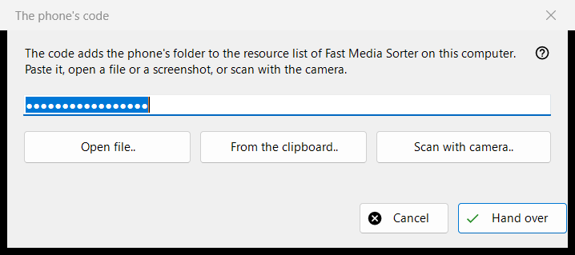
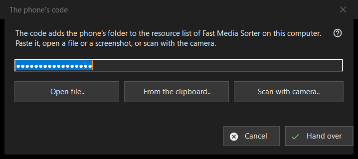

The phone's code
What this is for
Receives a connection code made by the phone app and hands it to Fast Media Sorter, which adds the phone's folder to its resource list on this computer. It opens from the 'Phone code..' button of the Share Manager main window.


In this order
- Get the code into the window in one of four ways: type or paste it into the field, press 'Open file..', press 'From the clipboard..', or press 'Scan with camera..'.
- Press 'Hand over'.
- Confirm adding the folder in the Fast Media Sorter window that appears.
The elements
Connection code
A single-line field that shows dots instead of characters, because the code is a secret; it is never written to a log. Pressing 'Hand over' with an empty field asks you to type the code, paste it, or open a file or a screenshot.
Open file, clipboard and camera
'Open file..' reads .fmscfg, .json and .txt files and QR images (.png, .jpg, .jpeg, .bmp, .webp); a file can also be dragged onto the window. 'From the clipboard..' reads the code from the clipboard. 'Scan with camera..' opens the camera window, and the scanned text is treated as if it was pasted.
Hand over
The code is checked, then sent to the running Fast Media Sorter, whose own import dialog still asks its usual questions. On success the status reads 'The code was handed over: confirm adding it in the Fast Media Sorter window.' and this window closes. If Fast Media Sorter is not found, is an older version or does not answer, the code is placed on the clipboard with privacy markers, and the status line says to paste it through 'Import from clipboard' in the resources panel.
Messages in the status line
A document that is not a connection code or resource settings file is reported as unreadable. A file made by a newer version asks you to update Fast Media Sorter. If another program holds the clipboard, the status says so.
Manager settings · SFTP sharing settings · Exchange server settings